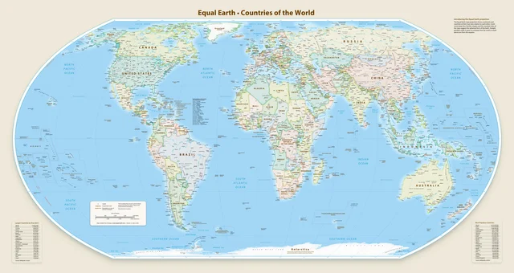
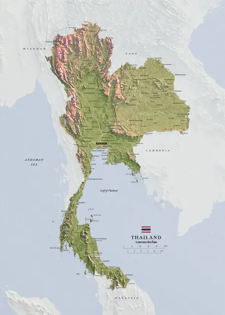
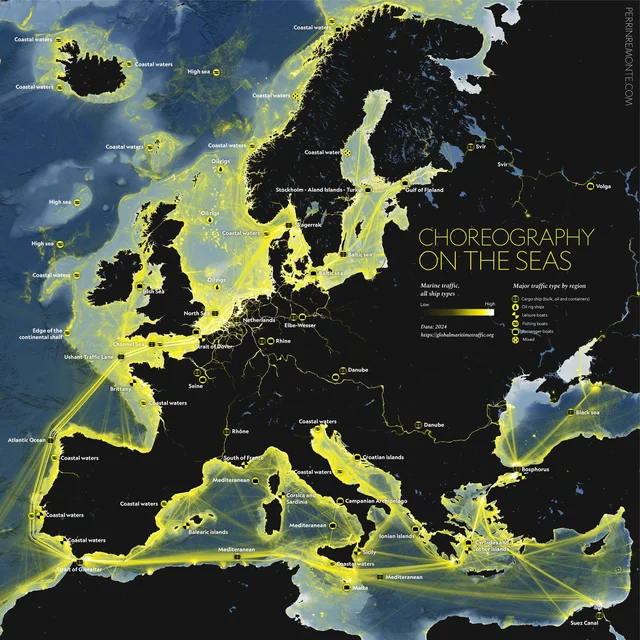
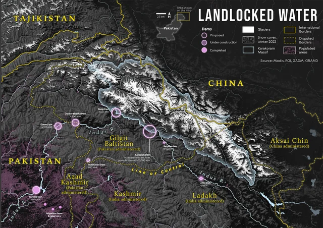
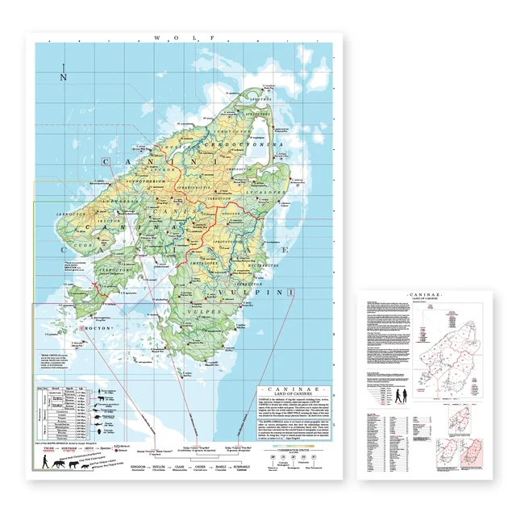

权威标准测绘
13 幅馆藏
标准地图
Equal Earth 世界投影 · 欧洲全境交通网络 · 加拿大与意大利国家测绘
探索展区 →

Equal Earth 世界投影 · 欧洲全境交通网络 · 加拿大与意大利国家测绘

Verygoogmaps 遥感地表 · 阿尔卑斯山脊阴影 · 火山口湖 DEM 坡向

全欧交通骨架 · 全球经济重心轨迹 · 城市化与流线网络

密西西比与勒拿河流域 · 贝加尔湖分水岭 · 潮汐水道航海图

复古水彩肌理插画 · 人文地理叙事 · 地理绘本与空间设计美学